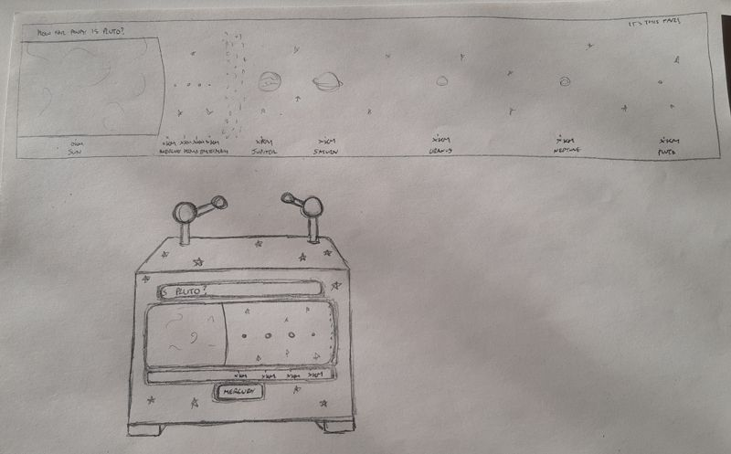
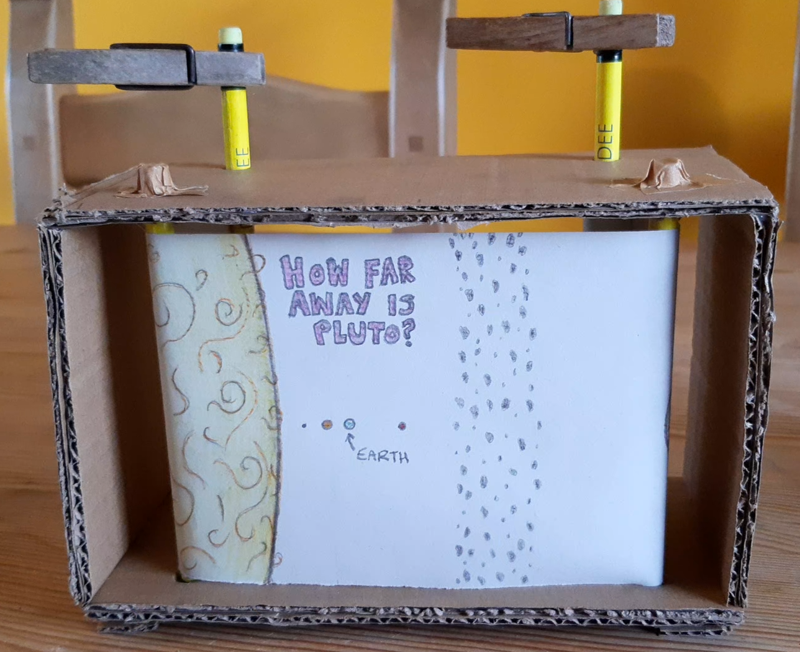
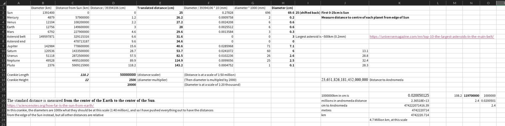
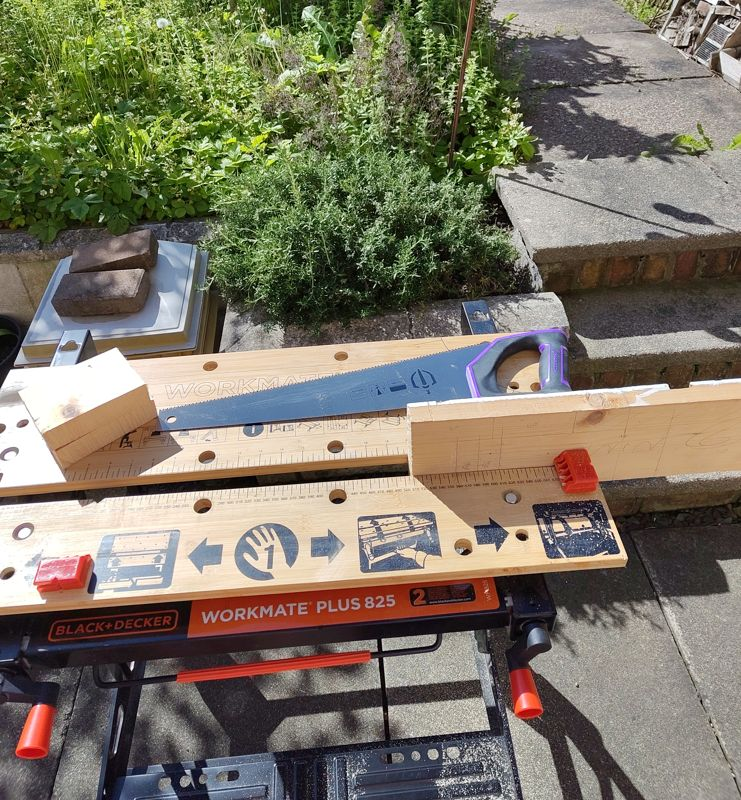
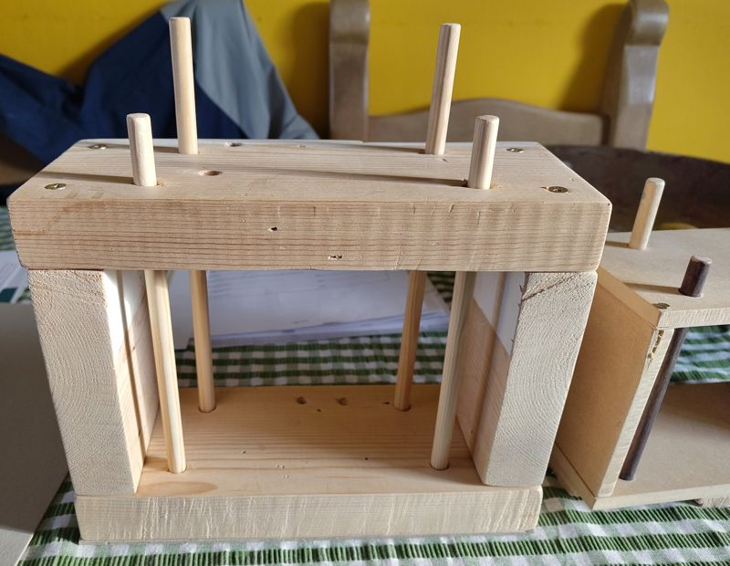
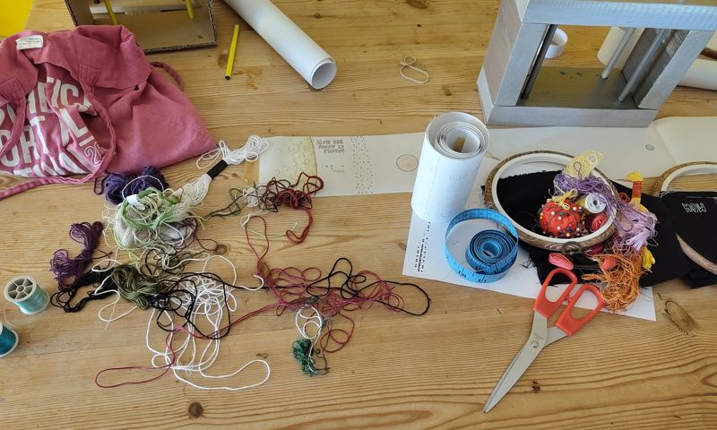
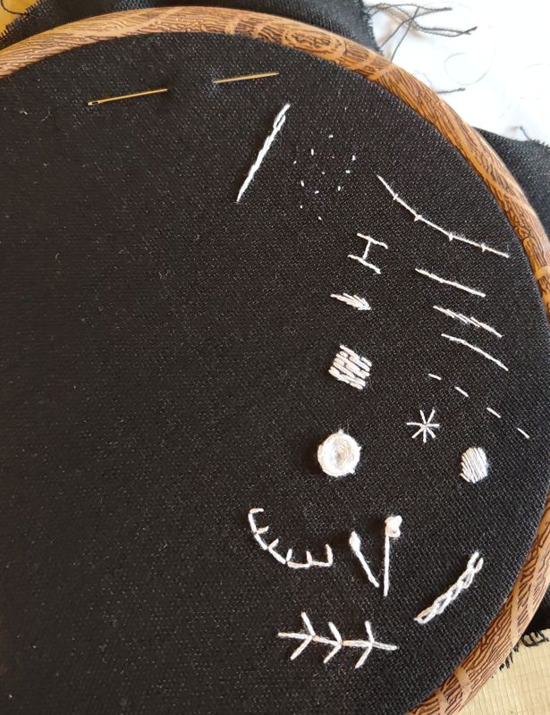
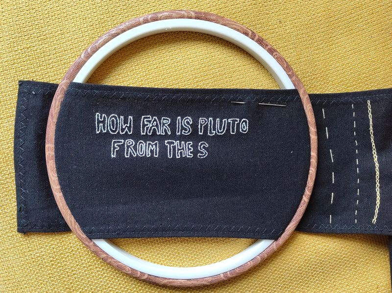
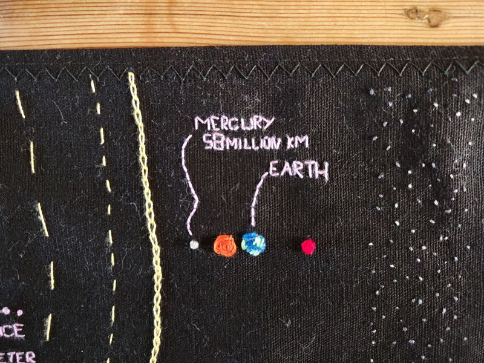
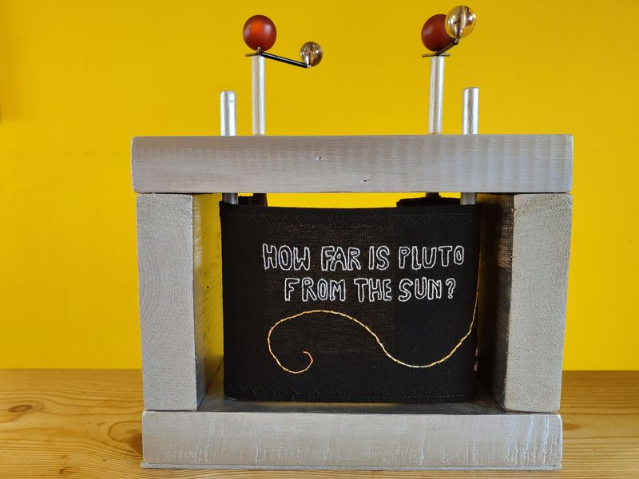

This year I received some funding from VACMA to take part in a series of workshops around puppetry. One that I booked fairly last minute was an online one-to-one course with Puppet Soup to make a crankie.
And it turned out to be my favourite workshop! If you're not familiar with crankies, they are a small form of moving panorama, and I took a lot of inspiration from this excellent crankie website when thinking about mine.
To begin with in the workshop, I learnt how to make a prototype cardboard crankie. Firstly, I needed to decide what the crankie would be about. I had a few ideas about a vertical crankie, with someone diving deep into the ocean and passing corals, fish, and deep sea creatures.
I also had some ideas about a crankie with a branching narrative (maybe it has multiple windows that you can crank separately?), but that seemed a bit advanced, so I settled on a to-scale representation of the solar system, because that way I got to use crafts and ALSO spreadsheets.
Here's a sketch and the prototype that I made:


I already had the spreadsheet with all the diameters / distances. You know, just something I had lying around. Actually, it was from back when I thought I might make Asterism have relative scale distances between planets and made Unity glitch out.

Anyway, the crankie looked pretty cool already! So next I had to construct a more robust and prettier looking version.
I sourced a bunch of materials from the local scrap store, and found some mdf that I thought would work. Unfortunately, when I went to nail the sides together the wood split, and I was sad :(
So I went back and found a much sturdier looking piece of actual wood (I think it's from an old door), and also did things like drilled pilot holes for my screws, which made me feel like a professional woodworker.

After measuring, sawing, more measuring, drilling, and sanding, here's what I had - you can see the split wood from the original on the right:

The idea with the dowels is that the front two are glued in place (and are positioned a little wider apart), and the back two can rotate. The scroll is then attached to the back two dowels, and winds itself around as the crankie is cranked.
I tested the paper scroll from the prototype and it (mostly!) worked! I had to sand down the holes a little, and add some graphite using a pencil to the dowels to get them to rotate smoothly.
This was probably the trickist part of the construction as I had to line up the holes fairly precisely, and get them the right width for the dowels.
In the end I added a bit of paper tape around the dowels to pad them and provide some friction inside the top holes, which you can see in the final image.
With the wooden construction complete, the next tasks were to paint it, and then to create an embroidered version of the paper scroll. The main reason for making a fabric crankie is that I like sewing, but also it's more robust than paper.
I carefully ironed, cut, and re-ironed my fabric strip. I lined it up against the wooden panels on my floor to try and keep my lines parallel while cutting. Then I hemmed the edges to stop the fabric from fraying.
In this photo you can see the painted crankie, and various embroidery threads, hoops, and the fabric strip.

I did some more maths in my spreadsheet to figure out how long the fabric should be. I wanted to make it a bit longer than my paper scroll, but was limited by the length of a piece of black fabric that I happened to have, which was around 1.5m long.
I scaled up all my diameters and distances, and made another paper scroll test with the new sizes to sketch some embroidery ideas.
I also did a small sampler to try out some stitches:

I also had to take into account things like how much of the fabric would be wrapped around the dowels at the start and end of the cranking, and how much of the fabric I would see at a time within the width of the crankie window.
Here's the start of the title, in whipped back stitch, which is a cool stitch I'd not done before where you do a back stitch and then weave the thread back through the stitches. It creates a more solid line so it's good for things like lettering.
I used an embroidery hoop to keep a constant tension and make my life easier. But I didn't use it all of the time, and to be honest I think there are places where I warped the fabric (mostly on Jupiter / Saturn where I had large areas to fill) because of it - I'm stil learning how to use them best.

Here's a nice close-up of the inner planets:

And here's the final crankie. I used gaffa tape to attach the fabric to the dowels, and I also added some beads to the top for cranking. If you look closely, can you see how they're attached onto the top of the dowels?
That's right, they're using the spiky spoke and tube bits from a molecular model kit! Another great find from the scrap store.

I always feel like I need to write a conclusion. The wooden version took me a long time and was quite fiddly, but looks very cool. The carboard version was very quick and easy to tweak if things didn't quite work.
I found some great materials, including the roll of paper that I used for the prototype, in my local scrap store, and I think that part of the ethos of crankies is to use recycled materials or things you have lying around.
If you wanna make one too, I really do recommend that website right at the top of this blog post.
I've also made a quick sketch of the parts and how to assemble them, based on what I learnt.
I forgot to write this on, but all the measurements are in cm, and the width of the wood I was using was 3cm.
You can use this as a starting point and then do something completely different :)